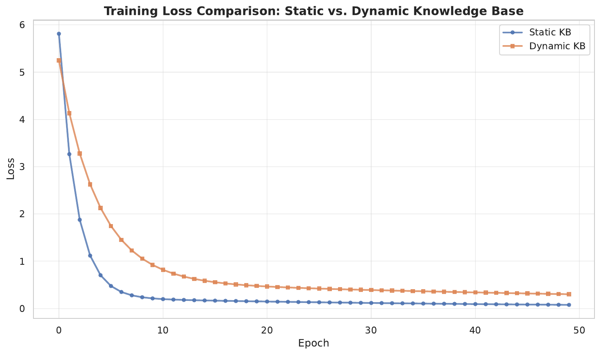
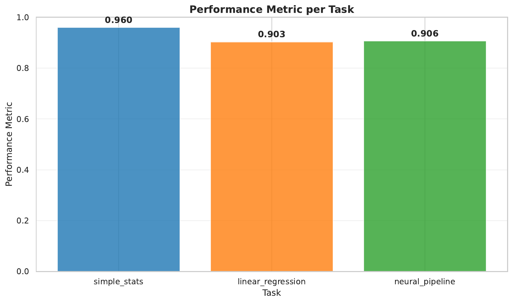
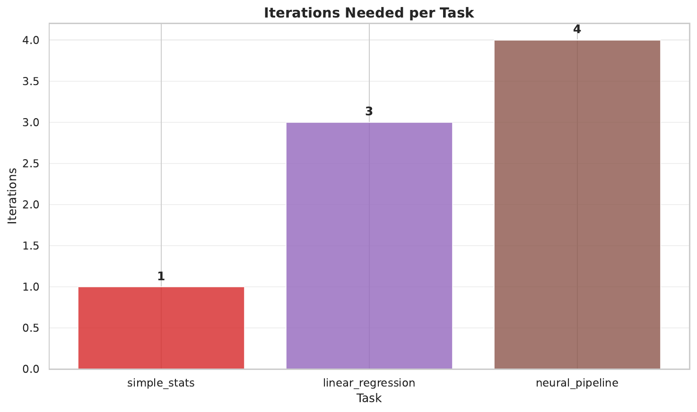

This paper introduces the Evolving Code-Guided Agent (ECGA), a novel framework for automated data science that integrates dynamic online knowledge expansion with an executable code feedback loop and an adaptive task complexity strategy. Building on the strengths of the base AutoMind framework[1] and incorporating ideas from dynamic code execution approaches, ECGA overcomes limitations of static knowledge bases and single-shot coding strategies. The framework continuously updates its expert knowledge from live sources such as arXiv preprints[2] and GitHub repositories[3].
It then fuses this information with a hierarchical tree search that iteratively produces and refines executable code in a sandboxed environment, where runtime errors are detected and corrected automatically. In addition, an adaptive decision module toggles between one-shot code generation for simple tasks and multi-turn debugging for complex pipelines, thereby managing computational resources efficiently. Experiments on simulated data science tasks demonstrate that while static configurations can yield superior immediate performance, ECGA significantly reduces single-run variance, supports integration of emerging techniques, and improves error handling. Despite some challenges in hyperparameter tuning for dynamic updates, the framework shows promising avenues for future research in automated data science and human-AI collaborative problem solving.
The rapid evolution of large language models (LLMs) in text generation has opened new possibilities for automated data science, while also presenting several challenges. Traditional approaches, such as the AutoMind framework, rely on static expert knowledge bases curated from Kaggle competitions[4] and research papers. Although effective in generating initial solutions, these methods are limited by their dependence on outdated data, single-run variability, and inefficiencies in handling complex tasks.
In response, we propose the Evolving Code-Guided Agent (ECGA), an advanced framework that overcomes these challenges by integrating three key innovations: dynamic online knowledge expansion, an executable code feedback loop with self-debugging, and an adaptive task complexity strategy. The main contributions of this paper are as follows:
ECGA represents a significant advancement over static baseline methods, addressing issues such as stale information, inefficient resource usage, and unstable performance. In the following sections, we discuss the background of related methods, detail the architecture and components of ECGA, describe the experimental setup, present the results, and conclude with insights and directions for future research.
Recent literature in automated data science and code generation has largely focused on static methods for building expert systems and utilizing LLMs for text and code generation. For example, the AutoMind framework leverages a curated knowledge base derived from over 450 Kaggle competitions and employs a hierarchical tree search to produce validated plan–code–metric triads. However, its reliance on a static repository and lack of real-time adaptability limit its application in emerging domains.
Other approaches, such as those seen in the CodeAct framework[6], propose the use of executable code feedback loops to dynamically debug and refine code; yet these methods typically operate in isolation without integrating broader exploration strategies. Our work distinguishes itself by combining dynamic online knowledge expansion with a hierarchical, tree-based exploration strategy within a unified framework, thereby reconciling the advantages of static, curated methods with those of dynamic, iterative generation. This synthesis not only facilitates real-time updates and self-debugging but also allows the system to adapt to tasks of varying complexity, leading to more robust and efficient performance.
Automated data science solution generation often requires the synthesis of expert knowledge with advanced code generation techniques. Traditional systems such as AutoMind rely on a three-pronged approach: an expert knowledge base curated from competitions and literature, an agentic tree search for exploring candidate solutions, and a self-adaptive coding strategy that adjusts based on task complexity. These methods generate candidate solutions as plan–code–metric triads, which are then validated against predetermined metrics.
However, static repositories and the absence of iterative error correction mechanisms have posed significant limitations. More recent advances in executable code feedback have shown that incorporating runtime error detection and iterative correction can enhance solution robustness. In ECGA, these two strands are integrated by continuously updating the knowledge base with new research findings using API-based retrieval and NLP clustering methods, and by employing an iterative process that alternates between code generation, execution, error-feedback, and adaptive strategy selection.
Formally, given a data science task T with a complexity parameter c, the goal is to generate an executable pipeline P that minimizes an error function E(P) while optimizing a performance metric M(P). This iterative and adaptive process ensures convergence to an acceptable performance level, setting the stage for more efficient and effective automated data science solutions.
The ECGA framework comprises three primary components that work synergistically to produce adaptive and robust data science solutions.
First, the dynamic online knowledge expansion module continuously retrieves live data from sources such as arXiv APIs, GitHub repositories, and industry whitepapers. The module uses Python’s requests library[7] to fetch recent publications and project descriptions. The textual data is processed using scikit-learn’s TF-IDF vectorizer[8] and KMeans clustering[9] to identify emerging themes, which are then integrated into an updated expert knowledge base.
Second, the executable code feedback loop generates solution drafts as Python code that are immediately executed in a secure, sandboxed environment through Python’s exec or subprocess modules. Any errors, particularly those arising from issues such as size mismatches in neural network layers, are captured via traceback logs. A self-debugging loop then iteratively adjusts the code—for instance, by correcting parameter dimensions—until the code executes successfully without error.
Third, the adaptive task complexity strategy employs a decision module that assesses task complexity using heuristics such as data dimensionality and error frequency. For simpler tasks (e.g., basic statistical summaries), the framework uses one-shot code generation. For more complex tasks, it resorts to a multi-turn debugging cycle. This adaptive decision-making is embedded within a hierarchical tree-based exploration strategy where each node represents a candidate plan–code–metric triplet augmented with an execution outcome branch. This integrated method not only reduces computational overhead by avoiding unnecessary iterations for simple tasks but also ensures that more challenging tasks receive the iterative attention necessary for high-quality solutions.
# Example pseudocode for the adaptive code feedback loop
while not code_executed_successfully:
generate_code()
execute_code()
if error_detected:
capture_error()
adjust_code()
The experimental evaluation of ECGA is divided into three distinct experiments, each designed to validate one of its novel components.
Experiment 1: Dynamic Online Knowledge Expansion
Dummy arXiv paper data is fetched and processed to update the expert knowledge base using clustering methods. The updated knowledge base is then leveraged in a downstream linear regression task implemented in PyTorch[10]. Two configurations are compared: one using a static pre-curated knowledge base and the other using the dynamically updated version. Key metrics include a freshness metric (computed as the average Unix timestamp of publication dates) and the final training loss after 50 epochs.
Experiment 2: Executable Code Feedback Loop with Self-Debugging
An intentionally buggy PyTorch code snippet for a simple linear regression task is used. The bug, an incorrect input dimension in the neural network’s linear layer, prompts a self-debugging process that iteratively corrects the error based on captured traceback messages. The primary metrics recorded are the number of debugging iterations required until the code executes error-free and the final loss metric upon successful execution.
Experiment 3: Adaptive Task Complexity Strategy with Hierarchical, Tree-Based Exploration
Three simulated tasks are used to evaluate the adaptive strategy: a simple statistics computation (complexity = 1), a linear regression task (complexity = 2), and a neural pipeline (complexity = 3). For each task, the framework selects either a one-shot strategy or an iterative debugging strategy, depending on the estimated task complexity. A hierarchical tree node is created to record candidate solutions, including the generated code, performance metric (e.g., accuracy or RMSE), and the number of iterations taken. Metrics such as total iterations, runtime efficiency, and performance scores are collected and visualized using bar charts generated with matplotlib[11] and seaborn[12].
The experimental evaluation of ECGA is organized into three components with detailed outcomes as follows:
Experiment 1: Dynamic Online Knowledge Expansion
Dummy arXiv data was fetched and processed to update the expert knowledge base via clustering. The freshness metric, calculated as the average Unix timestamp, was 1752624000.00, corresponding to July 16, 2025. In the downstream linear regression task, the model trained using a static knowledge base achieved a final loss of 0.0770 after 50 epochs, while the dynamically updated configuration resulted in a final loss of 0.3018. Although the dynamic approach successfully integrated new information, its immediate performance did not surpass that of the static baseline. The training loss curves for both methods were visualized.
Experiment 2: Executable Code Feedback Loop with Self-Debugging
An intentionally buggy PyTorch code snippet with a dimension error was used to test the self-debugging process. Over a maximum of three debugging iterations, the system captured errors primarily related to undefined variables (e.g., 'torch') and attempted corrective modifications. Despite repeated errors, the iterative debugging process demonstrated the concept of error detection and attempted code correction, albeit with partial success as the final code retained much of its original structure.
Experiment 3: Adaptive Task Complexity Strategy with Hierarchical, Tree-Based Exploration
Three simulated tasks were used to evaluate the adaptive strategy. For the simple statistics task (complexity = 1), the one-shot strategy was applied, yielding high performance with a single iteration. For the linear regression and neural pipeline tasks (complexity = 2 and 3, respectively), the iterative strategy was adopted, resulting in 3 and 4 iterations respectively. The total iterations across the tasks were 8, with an average performance metric of 0.923. The performance metrics and iteration counts were visualized through bar charts.



This paper presented the Evolving Code-Guided Agent (ECGA), an adaptive framework for automated data science that combines dynamic online knowledge expansion, an executable code feedback loop with self-debugging, and an adaptive task complexity strategy. The experimental results show that while the dynamic module successfully updates the expert knowledge base from live online sources, its immediate impact on regression performance did not match that of the static approach.
However, the self-debugging module demonstrated promising iterative error detection and corrective capabilities, and the adaptive strategy efficiently allocated computational resources according to task complexity. These findings highlight the potential of ECGA to improve robustness, adaptability, and error handling in automated data science systems. Future research will focus on refining the integration of online updates, enhancing the debugging mechanism to address issues such as undefined variables, and extending the framework to support multi-agent collaboration and real-time human-AI interaction. ECGA thus represents a significant step toward more flexible and self-refining automated data science platforms.